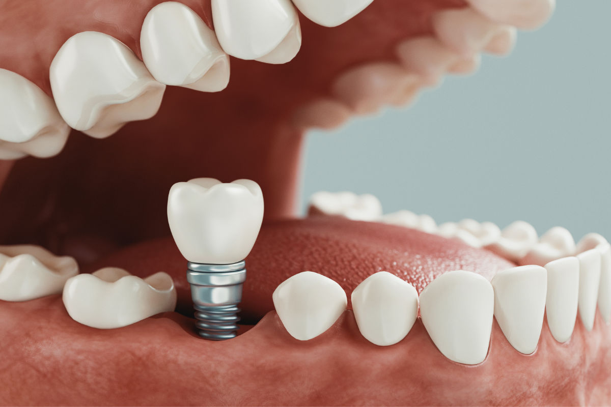

Opciones de Tratamientos

Odontología Preventiva
La prevención es la base de una buena salud bucal. Al priorizar los controles y limpiezas dentales regulares, puede evitar complicaciones costosas, como caries y enfermedades de las encías.

Odontología Restauradora
La vida puede pasar factura a sus dientes, pero procedimientos como empastes o implantes dentales ayudan a restaurar no solo su salud bucal sino también su confianza.

Emergencias
Dentales
Las emergencias dentales son estresantes, pero Dentisalud está aquí para brindarle atención rápida y compasiva cuando más la necesita.